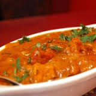
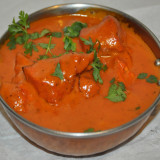
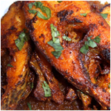
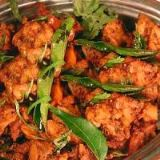

|
Chicken Tikka : This authentic dish is going to be your favorite. Chicken breasts marinated in yogurt,mint,herbs and spices.If you are a chicken lover, then you should definitely not miss on this one! |
|  | Butter Chicken : A great creamy buttery chicken gravy that will taste best when eaten with pitas or bread(roti/naan). Tomatoes and onions are fried in butter and blended with cream to make this gravy creamy and subtle. |
|  | Fish Curry : Fish curry tastes great when made with detail and attention. It is a goan curry that is made out of 8 spices. To be able to make this, you will need a lot of patience and ofcourse, the love for fish! |
|  | Fish Fry : Nothing gets better when you have a fish roasted in front of you. Fish marinated in ginger garlic paste along with vinegar and spices. Then shallow fried,until it cooks inside. |
|  | Pepper Chicken : This chicken dish is famous for making you cry. By that we mean, that the amount of pepper involved in this dish will leave your taste buds burning but the taste is amazing. If you are having the mood to eat something spicy today,your search has ended! |